오늘의 arXiv Top 15
2026-11-20 (금) · cs.CV / cs.LG / cs.RO / cs.CL / cs.AI New submissions 전수 평가
547
신규 논문
176
cs.CV
119
cs.LG
79
cs.RO
64
cs.CL
109
cs.AI
15
정밀 리뷰
분야별 필터
전체 15개 논문 표시 중
1
76점
CoachSI: Self-Improvement of Robot Policies with a Language Coach
VLA
relevance 9/10
Robotics (cs.RO)
장기 과제 중간에 멈춘 robot policy에 고정된 VLM coach가 다음 단계 지시문을 골라 주고, 성공한 rollout은 지시문만 원래 과제 지시문으로 바꿔 fine-tuning함. RoboCasa365 장기 과제 18개에서 coach 없이 낸 성공률이 47.4%에서 56.8%(영상 coach)와 59.3%(simulator 상태 coach)로 오름.
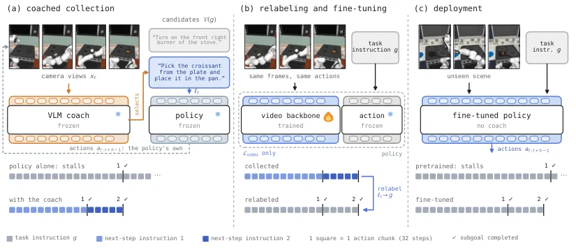
무슨 문제인가
generalist robot policy는 단일 skill은 잘 수행하지만 skill 여러 개를 이어야 하는 장기 과제에서는 실패가 많음. policy 혼자 모은 성공 rollout으로 다시 학습하면 이미 할 수 있는 행동만 반복해서 배우게 됨. 이를 넘으려면 사람 operator의 교정 행동, 별도로 학습한 reward·value model, 또는 배포 때마다 붙어 있는 상위 VLM planner가 필요했음. 저자는 실패 rollout을 분석해, 로봇이 이미 올바른 물체 앞에 있고 skill도 갖췄는데 다음 동작을 시작하지 않고 멈추는 경우가 많다고 보고함.
어떻게 푸나
CoachSI는 고정된 VLM(Qwen3.8-27B)을 language coach로 쓰는 self-improvement 방법임. 과제마다 policy의 단일 skill 지시문 형식으로 쓴 다음 단계 후보 목록이 미리 주어짐. coach는 action chunk(32 step)가 끝날 때마다 과제 지시문, 후보 목록, policy와 같은 카메라 영상 3개를 받음. 영상 대신 simulator 상태를 읽는 coach 변형도 비교용으로 씀. coach는 아직 끝나지 않은 첫 단계를 고르거나, 모든 단계가 끝났으면 원래 지시문을 유지함. coach는 행동을 내지 않으므로 rollout의 모든 행동은 고정된 policy가 만듦. 성공한 rollout은 관측과 행동을 그대로 두고 지시문만 원래 과제 지시문으로 바꿈(hindsight relabeling). 이 데이터를 사람 demonstration과 섞어 World Action Model(WAM: 미래 영상을 예측하는 video backbone과 이를 참조해 행동을 내는 action backbone으로 된 policy)을 fine-tuning함. 이때 video backbone의 self-attention 층만 video loss로 학습하고 action backbone은 고정함. 배포 때는 coach 없이 과제 지시문만 줌.
결과
- 실험은 모두 RoboCasa365(주방 장면의 단일 skill 과제와 이를 이은 복합 과제를 담은 시뮬레이션 benchmark)에서 함. WAM(OpenWAM)과 VLA(Xiaomi-Robotics-1)가 멈춘 상태 500개(과제 15개)에서, simulator 판정으로 고른 정답 다음 단계 지시문을 policy에 줌. 320 step 안에 다음 subgoal을 끝내는 비율이 과제 지시문 대비 4.6배(10.5퍼센트포인트) 오름. 같은 과제 지시문을 바꿔 말하기만 하면 1.3퍼센트포인트로 유의하지 않음.
- 카메라 영상만 보는 VLM coach는 상태 261개에서 정답 지시문이 낸 향상의 91%를 냄.
- 장기 과제 18개, 처음 보는 장면 20개, 총 1,080 episode에서 coach 없이 평가함. fine-tuning 데이터에서 과제 데이터가 차지하는 비율을 같게 맞췄을 때 성공률은 pretrained 47.4%, 사람 demonstration 추가 49.4%, policy 자체 성공 rollout 51.9%임. CoachSI는 simulator 상태를 읽는 coach로 59.3%, 영상만 보는 coach로 56.8%임.
- coach를 배포 때도 붙여 두는 계층형 방식은 41.9%로 pretrained보다 5.5퍼센트포인트 낮음. hindsight relabeling을 빼면 성공률이 59.3%에서 51.7%로 내림.
한계
실험은 RoboCasa365 시뮬레이션뿐이고 실로봇 실험이 없으며, 본문에 코드 주소가 없음. fine-tuning은 WAM 하나에서 한 번만 했고, VLA는 멈춘 상태 분석에만 쓰임. 과제별 다음 단계 후보 목록을 사람이 미리 써 주므로, 과제 분해를 coach가 스스로 하는 경우는 보이지 않았음.
누리랩 연구와의 연결
- 멈춘 상태를 찾아 다음 단계 지시문으로 되살리는 과정은 failure detection·recovery를 language feedback 기반 학습으로 바꾸는 사례임. VLA의 장기 과제 실패 분석과 복구 연구에서 비교 대상으로 쓸 수 있음.
- action backbone을 고정하고 video backbone만 고쳐 성공률을 올린 결과는, world model의 미래 예측을 바꿔 행동을 바꾸는 test-time steering 연구와 이어 볼 수 있음.
2
76점
MAWAM: A Multi-Agent World-Action Model for Coordinated Manipulation
World Model
relevance 9/10
Robotics (cs.RO)
로봇 여러 대의 action chunk와 각 로봇 카메라의 미래 장면을 한 번의 생성으로 함께 만드는 multi-agent world-action model을 제안함. 실제 로봇 2대의 협업 과제 3개에서 평균 성공률 67.8%로, 같은 데이터로 학습한 multi-agent VLA baseline(MA-VLA)보다 18.9퍼센트포인트 높음.
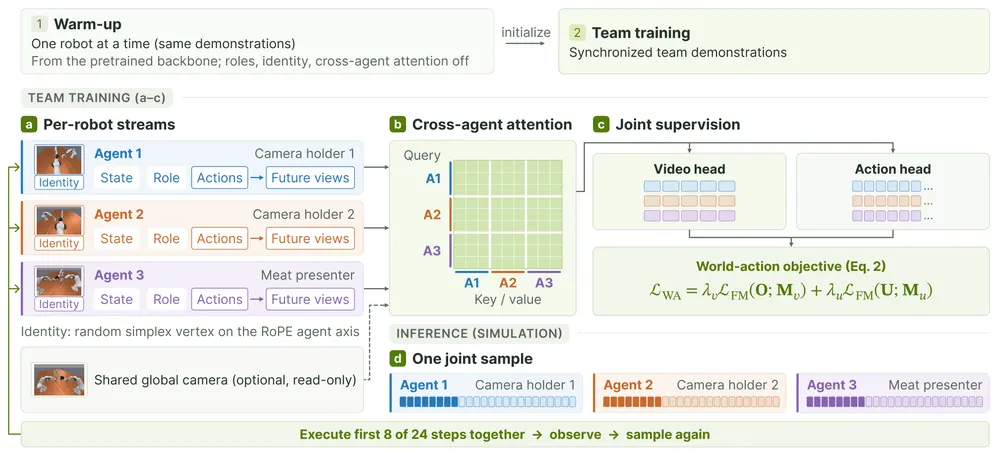
무슨 문제인가
협업 조작에서는 한 로봇의 행동이 공유 환경을 바꾸고, 그 변화가 다른 로봇이 다음에 할 수 있는 일을 정함. 로봇마다 policy를 따로 두는 decentralized 방식은 강하게 맞물린 과제에서 서로 기다리거나 동작이 엇갈릴 수 있음. 여러 로봇의 궤적이나 행동을 함께 생성하는 방법과 LLM·temporal logic으로 역할을 나누는 방법은 공동 행동이 만들 시각적 결과를 예측하지 않음. 반대로 multi-agent video world model은 행동을 조건으로만 받으므로 바로 실행할 수 있는 행동을 내지 못함.
어떻게 푸나
MAWAM은 단일 로봇용 world-action model인 GR00T 2를 출발점으로, 모든 로봇의 action token과 미래 장면 token을 하나의 Transformer에서 flow matching으로 함께 denoising함. 입력은 각 로봇의 private camera 영상, state, task role이고, 출력은 로봇별 24 step action chunk와 각 private view의 미래 frame 8장임. 로봇마다 view·state·action을 하나의 stream으로 묶고, 모든 stream 사이에 dense cross-agent attention을 둠. 어느 view가 어느 로봇 것인지는 video RoPE에 agent 축을 추가하고, regular simplex 꼭짓점 좌표를 identity code로 넣어 구분함. 로봇이 맡은 일은 별도의 role embedding으로 주므로, 두 로봇이 같은 role을 가져도 state와 action은 따로 유지됨. 학습은 로봇 한 대씩 데이터로 카메라와 controller에 맞추는 warm-up 뒤, 동기화된 팀 demonstration으로 identity를 무작위 배정하며 team training을 함. 실행 때는 24 step 중 앞 8 step을 모든 로봇이 동시에 실행하고 새 관측으로 다시 생성함.
결과
- 실로봇(Galaxea R1 Pro 2대, 로봇당 카메라 3대, 공유 전역 카메라 없음) 과제 3개를 과제당 30회 평가함. 평균 성공률은 MAWAM 67.8%, π0.5로 다시 구현한 MA-VLA 48.9%, CLS-DP 37.8%, GauDP 28.9%임. 세탁 가방에 옷 넣기 과제에서 차이가 가장 커서 53.3% 대 30.0%임.
- RoboFactory(팔 2~4개가 협업하는 시뮬레이션 조작 과제 8개 모음)에서 과제당 100회 평균 성공률이 90.3%임. MA-VLA 논문 보고값 83.4%보다 높지만, baseline 수치는 각 논문 보고값임. Long Pipeline Delivery에서는 95.0%로 MA-VLA 97.0%보다 낮음.
- cross-agent attention을 빼면 팔 4개가 신발을 차례로 넘기는 Long Pipeline Delivery 성공률이 95.0%에서 39.0%로 내려감. 실로봇 평균도 67.8%에서 52.2%로 내려감.
- team training에서 미래 영상 loss만 빼면 RoboFactory의 Place Food 과제 성공률이 78.0%에서 47.0%로 내려감. 테스트 때 미래 장면 token을 denoising하지 않고 남겨 두면 성공률은 비슷하지만, token 자체를 빼면 Long Pipeline Delivery가 0.0%가 됨.
한계
실험은 팔 4개 이하의 고정된 팀이고, 이종 로봇이나 실행 중 팀 구성 변화는 다루지 않았다고 저자가 밝힘. 실로봇 결과는 같은 기종 로봇 2대, 과제 3개, 과제당 30회이며 표준오차가 5퍼센트포인트 안팎임. 미래 장면을 끝까지 생성하지 않아도 성공률이 비슷하므로, 성능 향상이 장면 예측 자체에서 오는지 학습 신호로서의 효과인지는 가려지지 않음. 본문에 코드 주소는 없음.
누리랩 연구와의 연결
- world-action model을 multi-robot manipulation으로 넓힌 사례라, world model 기반 VLA 연구에서 여러 팔·여러 로봇 설정의 비교 대상으로 쓸 수 있음.
- 로봇별 미래 장면 예측이 행동과 함께 나오므로, 예측과 관측의 차이로 협업 실패를 감지하는 failure detection 연구에 바로 붙여 볼 수 있음.
3
76점
Learning What Actions Change: Action Effect Matching for Dynamics-Faithful World Models
World Model
relevance 8/10
ICLR 양식 (추정)
Robotics (cs.RO)
행동을 조금 바꿨을 때 영상이 어떻게 달라지는지를 world model이 실제와 같게 따라가도록 하는 보조 loss AFFECT를 제안함. DROID(대규모 로봇 조작 데이터셋)가 제안한 Franka 하드웨어 구성의 실로봇에서 world model 속 policy 성공률과 실제 성공률의 Pearson 상관이 0.468에서 0.790으로 오름.
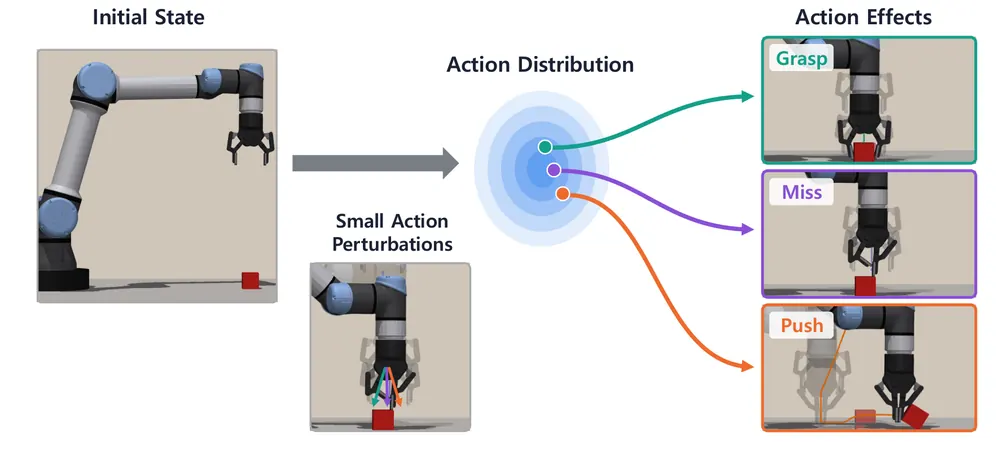
무슨 문제인가
video diffusion 기반 robot world model은 그럴듯한 영상을 만들지만, 행동이 조금 달라질 때 결과가 달라지는 것은 잘 반영하지 못함. 같은 장면에서 접근 경로가 약간만 달라져도 물체를 잡거나 놓치거나 밀어내는 결과가 갈리는데, 모델은 이 차이를 무시한 비슷한 영상을 내는 경향이 있음. 이런 모델은 policy 평가에서 실제 성공률과 다른 점수를 주고, planning에서 잘못된 행동을 고르게 함. 기존 보완책은 같은 초기 상태에서 반복 실행한 counterfactual rollout이나 결과 label·reward가 필요해서 실로봇에서 규모를 키우기 어려움.
어떻게 푸나
먼저 사람이 과제 없이 자유롭게 물체를 다룬 teleoperation(play data)으로 play policy를 학습하고, 이 policy를 자율로 돌리며 action chunk마다 시간 상관이 있는 noise를 더해 실행함(perturbation play). 이때 더한 noise를 기록하고, world model 입력은 현재 관측과 실행된 action뿐이며 noise는 loss 계산에만 씀. AFFECT는 고정된 두 encoder로 noise 특징(합, 제곱합 등)과 영상 latent 특징(채널 평균 변화 등)을 뽑음. noise 특징에서 기대값을 빼서 중심화한 뒤 영상 특징과 곱하면, 같은 장면 안에서 영상이 noise를 따라 얼마나 움직이는지를 재는 공분산이 됨. 실제 영상의 이 공분산과 생성 영상의 공분산이 같아지도록 차이의 제곱합을 flow loss에 더함. 생성 영상은 실제 미래를 보지 않고 Gaussian noise에서 짧은 미분 가능한 Euler sampler로 만듦. 계산 비용 때문에 AFFECT loss는 8 iteration마다 한 번만 더함. 저자는 이 loss가 유한 특징 MMD(maximum mean discrepancy)와 같고, 장면에만 달린 오차는 상쇄됨을 증명함.
결과
- 두 action 조건 rectified-flow video world model DreamDojo와 Cosmos3에 AFFECT를 붙여 비교함. 실제 Franka(DROID 구성)에서 DreamDojo backbone의 Pearson 상관이 0.468에서 0.790으로, Cosmos3는 0.425에서 0.583으로 오름. FVD(Fréchet Video Distance: 생성 영상과 실제 영상의 분포 차이, 낮을수록 좋음)는 각각 807에서 622로, 910에서 744로 내림.
- 실제 ALOHA-2에서 Cosmos3의 상관이 0.298에서 0.694로, DreamDojo는 0.325에서 0.490으로 오름. 다만 DreamDojo의 FVD는 183에서 188로 조금 오름.
- DreamDojo로 후보 action chunk를 상상해 고르는 planning에서 UR5e 시뮬레이션 pick-and-place 과제 5개 평균 성공률이 60.0%에서 68.3%로 오름. 무작위 선택은 46.7%임. ALOHA-2 실로봇 장기 과제 1개(subtask 3개)에서는 평균 72.2%에서 80.6%로 오름.
- Cosmos3를 perturbation play data로 1만 iteration만 학습한 ablation에서 AFFECT 없이 학습한 FVD는 284임(embodiment는 본문에 명시되지 않음). noise 특징을 episode 사이에서 섞은 placebo matching은 FVD를 460으로, noise 없이 영상 특징 평균만 맞춘 matching은 451로 올림. AFFECT는 256으로 내림.
한계
상관 평가는 embodiment마다 2개 과제, checkpoint 4개, 12 episode 규모이고 성공 여부는 사람이 영상을 보고 매김. planning 실로봇 실험은 ALOHA-2 장기 과제 1개이고 시행 횟수는 본문에서 확인 불가하며, ablation은 영상 지표만 보고함. loss는 손으로 정한 특징이 잡는 반응만 제약하고 장면에만 달린 오차는 고치지 못함(저자 명시). 본문에 코드 주소가 없음.
누리랩 연구와의 연결
- world model을 policy 평가기나 test-time planning에 쓸 때 행동 차이를 반영하는지가 병목이라는 점을 수치로 보임. 누리랩 world model 기반 VLA 평가·planning 연구에서 학습 loss로 바로 붙여 볼 수 있음.
- 반복 실행 없이 기록된 noise만으로 행동 효과를 감독하는 방식은 counterfactual reasoning과 failure detection(잡기 실패·밀어내기 예측) 연구의 학습 신호로 이어 볼 수 있음.
4
75점
Search or Scoring? Diagnosing Why Visual World-Model Planners Fail
World Model
relevance 8/10
Computer Vision and Pattern Recognition (cs.CV)
visual world model planner의 실패를 optimizer가 좋은 행동을 시도하지 못한 경우(search failure)와 cost가 나쁜 행동을 고른 경우(scoring failure)로 가르는 진단법을 만듦. 진단에 맞춰 Metaworld 새 과제 168개에서 검색한 demonstration 행동 window 30개의 평균을 model 없이 실행하면 127개를 풂. world model로 고르면 최대 92개임.
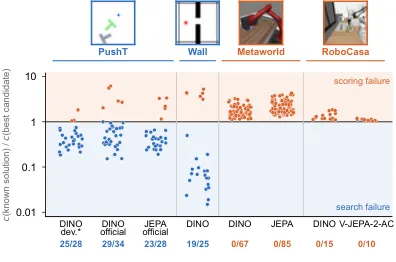
무슨 문제인가
DINO-WM, JEPA-WM 같은 visual world model은 고정된 DINOv2 feature 공간에서 action의 결과를 예측함. CEM(cross-entropy method)은 예측 결과와 goal image의 거리(cost)가 가장 작은 action sequence를 찾음. 계획이 실패하는 원인은 optimizer가 cost가 선호할 행동을 한 번도 시도하지 않은 경우와, 예측 위에서 계산한 cost가 나쁜 행동을 1등으로 매긴 경우로 나뉨. 앞의 경우는 search를 늘려야 하고 뒤의 경우는 model을 고쳐야 하지만, planner는 어느 쪽이 일어났는지 기록하지 않음. 그래서 원인을 확인하지 않은 채 search를 늘리거나 encoder·predictor를 바꾸는 대응이 쓰여 왔음.
어떻게 푸나
진단은 CEM이 평가한 후보를 simulator에서 실제로 실행하고, 과제를 만든 expert action(known solution)을 planner 자신의 cost로 채점함. 같은 cost를 예측 결과와 실제 도달 frame에 각각 적용한 값도 비교함. known solution의 cost가 CEM 후보 전부보다 낮으면 search failure, 아니면 scoring failure로 표시함. 저자는 cost를 실제 cost와 예측 오차의 합으로 놓고, 오차가 작으면 search failure가, 크면 scoring failure가 나온다는 명제를 고정 후보 집합 가정 아래 증명함. 진단을 시험하는 DemoProp은 현재·goal proprioception을 key로 demonstration의 action window를 검색함. 검색한 window는 search failure가 많은 설정(search regime)과 scoring failure가 많은 설정(scoring regime)에서 다르게 씀. search regime에서는 가까운 window 100개를 CEM 첫 population에 넣는 warm start를 씀. scoring regime에서는 가장 가까운 window 30개의 평균을 model 없이 실행하는 Average를 씀. 어느 쪽도 학습이나 reward를 쓰지 않음.
결과
- known solution 채점에서 PushT(2-D 평면에서 T자 블록 밀기) 공식 평가 episode 중 full success에 실패한 경우에서 search failure는 DINO-WM 29/34, JEPA-WM 23/28임. Metaworld(3-D 조작 benchmark)에서 30 step 구간을 떼어 만든 window 과제에서는 0/67, 0/85로 모두 scoring failure임. Metaworld에서 cost의 성공·실패 구분 AUROC는 실제 도달 frame에서 0.94, 예측 frame에서 0.54임.
- 검색한 window를 CEM 후보에 더하는 warm start(논문 이름 Expand)는 PushT 96 episode의 full success를 DINO-WM에서 62에서 78로, JEPA-WM에서 68에서 82로 올리고 CEM의 성공을 하나도 잃지 않음. 반대로 population을 4배 늘린 CEM은 Metaworld DINO-WM에서 full success가 45에서 43으로 내림.
- Metaworld 새 과제 168개에서 같은 window 30개를 쓸 때 Average는 127개를 풂. 같은 window로 warm start한 CEM은 92개와 89개, model이 고른 window(Restrict)는 84개와 87개임(DINO-WM, JEPA-WM 순).
- PushT에서 predictor만 6·5·4·3 bit로 quantize하자 실패가 scoring 쪽으로 옮겨가고 더 나은 사용법도 바뀜. 진단 결과에 따라 warm start와 Average 중 하나를 고르도록 미리 고정한 규칙은 새 episode 960개 중 678개를 풀고, 항상 warm start는 517개, 항상 Average는 530개임.
한계
모든 실험이 시뮬레이션이고 실로봇 실험은 없으며, search regime은 PushT와 Wall이라는 단순한 2-D 과제에만 근거함. 진단에는 과제마다 known solution이 필요하고, Metaworld는 공식 long-horizon protocol이 아닌 30-step window 과제로만 시험함. 저자도 성공률을 비교해 사용법을 고르면 같은 결과가 나온다고 밝혀, 진단은 선택을 개선하기보다 이유를 설명하는 데 그침. Metaworld에서는 같은 demonstration으로 학습한 BC policy가 128개로 Average와 비슷하고, 본문에 코드 공개 주소는 없음.
누리랩 연구와의 연결
- world model 기반 test-time planning이 실패할 때 원인을 실패 하나 단위로 가르는 측정 절차임. failure detection·diagnosis 연구에서 known solution 채점과 예측·실제 cost 비교를 그대로 가져다 쓸 수 있음.
- 예측 오차가 크면 후보를 늘릴수록 model이 과대평가한 행동을 고른다는 결과는, VLA proposal을 world model로 재순위하는 방식을 설계할 때 확인해야 할 조건임.
5
74점
ActMem: From Latent Memory Reasoning to Grounded Robotic Action
VLA
relevance 10/10
Computer Vision and Pattern Recognition (cs.CV)
기억이 필요한 조작 과제에서, VLM이 과거 영상을 보고 현재 subtask를 추론할 때 생긴 hidden state를 action expert의 조건으로 넘기고 현재 화면은 별도 cross-attention으로 읽게 함. RoboMemArena 26개 과제의 task success가 71.1%로, 가장 강한 baseline SimpleMemVLA보다 7.5퍼센트포인트 높음.
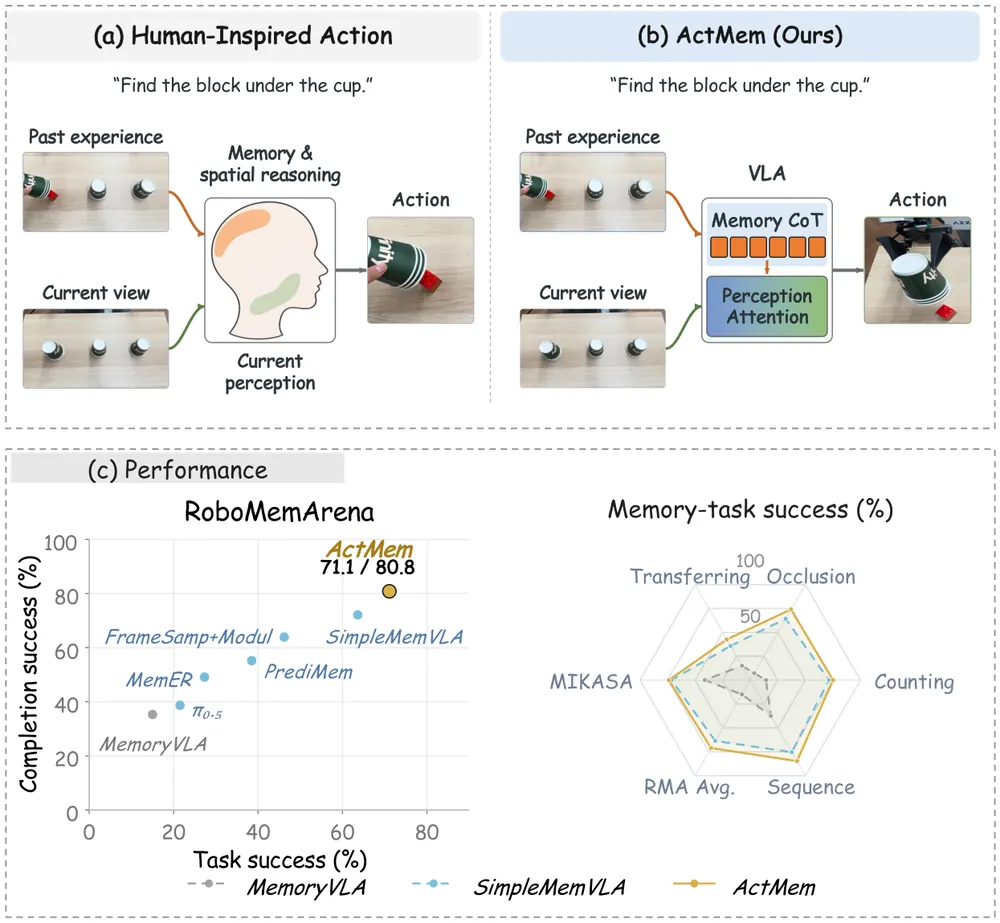
무슨 문제인가
VLA 대부분은 현재 frame만 보고 행동하므로, 컵 밑에 숨긴 블록이나 이미 열어 본 서랍처럼 화면에 남지 않은 사건을 다루지 못함. 휴지를 몇 장 뽑았는지처럼 어느 한 frame에도 보이지 않고 frame 사이 관계에서만 추론되는 정보도 있음. 기존 memory bank·retrieval 방식(MemoryVLA, MemER)은 과거 관측을 저장해 넘기지만, 그 관측이 지금 무엇을 뜻하는지는 action module이 알아내야 함. native-video 방식(SimpleMemVLA)은 VLM 안에서 과거 영상을 추론하지만, 같은 context에 현재 화면도 들어 있어 기록이 길어질수록 현재 화면의 세부 정보가 action에 덜 전달된다고 저자가 지적함.
어떻게 푸나
ActMem은 공개 VLA 코드베이스 starVLA 위에 Qwen3-VL-4B backbone과 16층 flow-matching DiT action expert를 붙인 구조임. 입력은 timestamp가 붙은 앞 카메라 과거 영상(RoboMemArena에서 1 fps, 최대 126초), 현재 wrist 카메라 이미지, 언어 지시임. backbone은 이를 한 context로 읽고 현재 subtask 문구(예: lift the cup)를 autoregressive하게 생성함. 생성된 subtask token의 마지막 층 hidden state와 token embedding을 Latent Memory CoT(기억 추론 결과를 담은 잠재 상태, 이하 Memory CoT)라 부름. action expert는 과거 frame token 대신 이것만 조건으로 받음. Perception Attention은 DiT의 3, 7, 11, 15층에 넣은 zero-init gated cross-attention으로, 현재 화면 token의 backbone 출력을 읽음. 학습은 subtask 문구 cross-entropy와 flow matching loss를 함께 쓰고, 출력은 16 step action chunk 중 10 step을 실행한 뒤 다시 추론함. 추론 때는 과거 부분의 KV cache를 재사용하고 직전 subtask를 초안으로 넣어 한 번의 병렬 pass로 검증하므로(speculative decoding 검증 규칙) 출력은 같고 계산만 줄어든다고 저자가 밝힘.
결과
- RoboMemArena(기억 의존 시뮬레이션 조작 과제 26개, 과제당 51회)에서 task success 71.1%, completion success 80.8%임. SimpleMemVLA는 63.6%, 72.1%이고 baseline 수치는 이전 논문 보고값임. Transferring 범주는 42.6%로 FrameSamp+Modul 63.8%보다 낮음.
- 40k iteration 학습, 과제당 10회 평가 ablation에서 task success는 full 52.3%임. subtask text embedding만 조건으로 쓰면 40.4%, action expert가 prompt token 전체를 읽으면 38.8%, Perception Attention을 빼면 47.7%, 과거를 빼면 17.7%임.
- MIKASA-Robo(화면에서 사라진 정보를 기억해야 하는 시뮬레이션 과제 5개, 과제당 100회) 평균 성공률이 73.8%로, 저자가 재현한 SimpleMemVLA 71.4%보다 2.4퍼센트포인트 높음. MIKASA-Robo 과제 중 하나인 RC-5에서는 49% 대 53%로 SimpleMemVLA보다 낮음.
- 실제 ARX LIFT2 로봇에서 과제 4개를 과제당 40회 평가함. 평균 성공률이 68.8%로 SimpleMemVLA 58.8%, MemoryVLA 55.0%, MEM-π0.5 48.8%보다 높음. 과제별로는 Cup-and-Block과 Scissor Retrieval 75%, Tissue Counting 65%, Cabinet Search 60%임.
한계
benchmark마다 학습 모델 1개로 평가하고 분산을 보고하지 않았으며, RoboMemArena baseline은 이전 논문 수치라 학습 조건이 같은지 본문에서 확인 불가임. 결정 1회 latency 중앙값이 0.33~0.52초로 고정 크기 memory를 쓰는 π0.5 계열 0.08~0.09초보다 느리고, 모든 과거 frame을 context에 두므로 수십 분 과제는 다루지 못한다고 저자가 밝힘. 학습에 subtask 주석이 필요하고(실로봇은 Qwen3-VL이 만든 라벨을 사람이 일부 확인함), 본문에 GitHub 주소는 있으나 코드와 checkpoint는 공개 예정으로만 적혀 있음.
누리랩 연구와의 연결
- robot memory를 과거 관측 저장이 아니라 subtask 추론의 hidden state로 넘기는 설계라, 기억 의존 VLA 연구에서 SimpleMemVLA와 함께 비교 대상이 됨. 같은 subtask 문구를 강제해도 첫 번째와 두 번째로 붓는 시점의 Memory CoT끼리 cosine 유사도가 0.25에 그침. 이 분석은 잠재 상태에 진행도가 담긴다는 근거로 쓸 수 있음.
- 실패가 가장 많은 Cabinet Search(이미 연 서랍 기억, 60%)는 자기 행동 이력 추적이 약하다는 결과라, subtask 추론 오류를 감지해 고치는 failure detection·recovery 연구로 이어 볼 수 있음.
6
74점
WEVO: World Model-Enabled VLA Optimization for Whole-Body Loco-Manipulation
World Model
relevance 8/10
ICRA·IROS·RA-L 계열 양식 (추정)
Robotics (cs.RO)
휴머노이드 Unitree G1의 whole-body VLA를 teleoperation 없이 action-conditioned video world model 안에서 RL로 post-training함. 실로봇 과제 3개의 평균 성공률이 23.3%에서 75.0%로 오르고, 같은 실로봇 데이터로 직접 RL을 한 경우는 48.3%임.
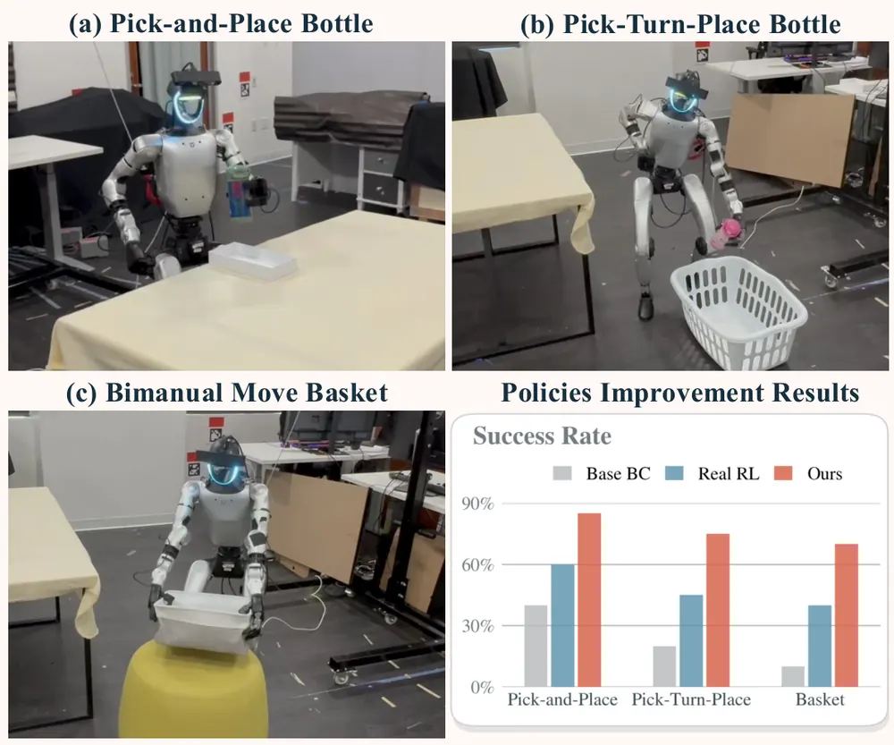
무슨 문제인가
VLA를 RL로 개선하려면 많은 시행이 필요하지만, 휴머노이드가 실제 환경에서 탐색하면 넘어지거나 부딪힐 위험이 큼. 3DGS로 배치 장면을 다시 만든 simulator에서 RL을 하면, policy가 simulator와 실제 화면의 남은 차이를 이용해 성능이 오히려 내려갈 수 있음. 기존 video world model 기반 RL(VLAW, WMPO 등)은 고정된 팔의 탁상 조작에 머물렀고 학습에 사람의 teleoperation 데이터를 썼음. 그래서 걷기와 조작을 함께 하는 휴머노이드 VLA를 어디서 안전하게 개선할지에 대한 방법이 없었음.
어떻게 푸나
WEVO는 simulator와 video world model에 서로 다른 일을 맡김. 먼저 LEGS simulator(3DGS 배경과 MuJoCo 접촉을 합친 G1용 데이터 생성기)에서 과제당 합성 demonstration 200개를 만들어 GR00T N1.7 VLA를 학습함. 이 VLA를 실로봇에서 자율로 돌려 과제당 성공 10개와 실패 10개, 총 20개 궤적을 남김. world model은 DreamDojo(Cosmos 기반, 관절 상태를 조건으로 다음 egocentric frame을 만드는 2B 모델)에서 시작함. simulator에서 만든 manipulation·locomotion play data 11시간으로 mid-training하고, 과제별로 합성 demonstration과 실로봇 궤적 20개로 fine-tuning함. RL 단계에서는 VLA가 18차원 task-space 목표 chunk를 내고, whole-body controller인 SONIC WBC와 MuJoCo가 이를 43차원 관절 상태로 바꾸고, world model이 그 관절 상태로 다음 화면을 만듦. 생성된 영상은 SARM 계열 progress 모델이 진행도로 바꾸고, 그 증가분을 dense reward로 써서 DICE-RL·ReinFlow·AWR로 action head를 갱신함.
결과
- 실로봇 과제 3개(병 집어 상자에 넣기, 병 들고 돌아서 바닥 바구니에 넣기, 양손으로 바구니 옮기기)를 과제당 20회 평가함. world model 안의 DICE-RL 평균 성공률이 75.0%이고, 시작 BC는 23.3%, 같은 실로봇 궤적 20개로 DICE-RL을 한 Real RL은 48.3%임.
- LEGS simulator에서 직접 RL을 한 Sim RL은 성공률이 BC보다 세 과제 모두 내려가 30%, 0%, 0%가 됨. 저자는 이를 simulator와 실제 화면의 차이를 policy가 이용한 결과로 해석함.
- 같은 world model을 쓰는 기존 방법과 비교하면 평균 성공률이 VLAW 33.3%, WMPO 40.0%, DICE-RL 75.0%임. DICE-RL에서 dense reward를 종료 시점 성공 신호로 바꾸면 45.0%, 매 round 다시 rollout하지 않고 고정 buffer를 쓰면 58.3%로 내려감.
- play data mid-training을 빼면 평균 성공률이 75.0%에서 63.3%로 내려감. 같은 45,000 step 조건에서 play data로 mid-training하면 손과 물체 영역의 PSNR(iPSNR)이 세 과제 평균 1.17 dB 높음.
한계
실로봇 과제는 3개이고 방법·과제마다 학습을 한 번만 돌려 seed 간 편차가 없음. world model과 reward 모델을 과제마다 따로 fine-tuning하고, G1 전용 인터페이스라 다른 휴머노이드로 바로 옮길 수 없다고 저자가 밝힘. RL 한 번에 H100 8장으로 약 12시간, world model 과제별 fine-tuning에 17시간이 들고, 본문에 코드 주소는 없음.
누리랩 연구와의 연결
- video world model을 VLA RL 환경으로 쓸 때 dense progress reward, 매 round rollout 재수집, 실로봇 성공·실패 궤적으로 world model 맞추기가 각각 성공률에 주는 영향을 ablation으로 보임. world model 기반 VLA post-training 연구의 설계 기준으로 쓸 수 있음.
- simulator RL은 실로봇 성공률을 낮추고 world model RL은 실로봇 성공률을 올린다는 비교는, 어떤 학습 환경이 실제 배치 성능을 예측하는지 판단하는 failure 분석 연구와 이어짐.
7
72점
LoopedWAM: Looped World Action Models for Elastic Inference
World Model
relevance 9/10
Computer Vision and Pattern Recognition (cs.CV)
world action model의 video·action expert가 공유 block 묶음을 반복 실행하게 해 0.58B parameter로 줄이고, 한 checkpoint에서 추론 깊이와 sampling step 수를 test time에 고르게 함. LoopedWAM-E는 LIBERO 평균 성공률 96.0%를 H100에서 query당 27.6 ms에 내고, 같은 2 step의 Fast-WAM(37.1 ms)보다 1.3배 빠름.
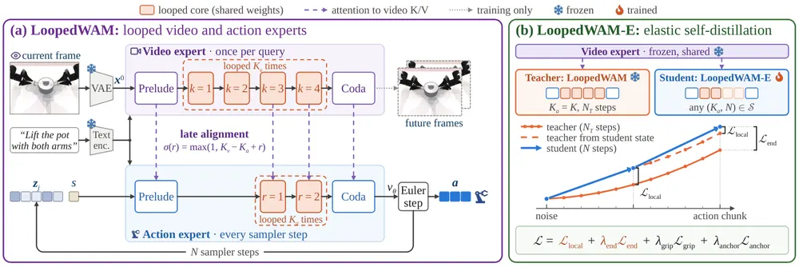
무슨 문제인가
World action model(WAM)은 사전학습된 video diffusion model에서 출발해 video expert와 action expert를 함께 학습하고 로봇 행동을 내는 policy임. 지금의 WAM은 대개 2B에서 14B parameter이고, 깊은 action expert를 sampling step마다 다시 실행하므로 closed-loop 제어의 memory·latency 조건을 맞추기 어려움. 층 사이에 가중치를 공유하면 저장하는 parameter는 줄지만 같은 깊이를 실행하는 시간은 그대로임. sampling step을 줄이면 빨라지지만, 적은 step으로 학습하지 않은 policy는 행동 품질이 내려갈 수 있음.
어떻게 푸나
LoopedWAM은 Fast-WAM 구조를 따름. 입력은 카메라 영상, proprioception, 언어 지시이고, 출력은 action 32개로 된 action chunk임. video expert는 현재 frame을 query당 한 번 encoding해 key·value를 저장하고, action expert는 이를 읽으며 N번의 Euler step으로 chunk를 만듦. 각 expert는 Wan2.1-T2V-1.3B(30 block)에서 복사한 block 12개만 저장함: 앞 3개(prelude), 반복해 쓰는 공유 core 6개, 뒤 3개(coda)임. core를 4번 반복하면 실행 깊이가 복사 원본인 Wan2.1과 같은 30층이 됨. video loop 수 Kv와 action loop 수 Ka는 따로 정할 수 있고, late alignment 규칙으로 action의 마지막 loop가 항상 가장 깊은 video loop를 읽게 함. LoopedWAM-E는 elastic self-distillation으로 만든 단일 checkpoint임. 고정된 LoopedWAM(10 step)을 teacher로 두고, student의 action expert가 Ka 1·2·4와 N 2·5·10의 9개 조합을 번갈아 학습함. 각 step의 target은 student 자신의 중간 상태에서 출발한 teacher의 적분 결과이므로, student는 계산을 줄여 생긴 오차를 고치도록 학습됨.
결과
- LIBERO(시뮬레이션 조작 과제 40개, 6,000 episode)에서 LoopedWAM의 평균 성공률은 96.1%임. 저자가 같은 protocol로 재평가한 Fast-WAM(약 6B)은 96.6%, Faster-WAM(약 6.3B)은 98.7%임. 차이는 LIBERO-Long에 몰려 있음(90.1% 대 93.5%, 98.1%). RoboTwin 2.0(양팔 과제 50개)은 91.9%로 Fast-WAM 논문값 91.8%와 비슷함.
- 같은 H100 측정에서 peak GPU memory는 2.05GB로 Fast-WAM의 15.25GB보다 7.4배 작음. full depth latency는 91.8ms 대 107.5ms로 1.2배 차이뿐임. LoopedWAM-E(Ka=2, N=2)는 27.6ms에 96.0%임. Fast-WAM도 2 step에서 96.0%를 37.1ms에 내므로, step 수를 맞추면 속도 차이는 1.3배임.
- elastic 학습 없이 action loop를 1개로 줄이면 LIBERO 성공률이 12.3%로 내림(짧은 학습 schedule 기준). 같은 설정에서 LoopedWAM-E는 93.7%를 유지함. Ka=4, N=2에서는 LIBERO, RoboTwin 2.0, RoboCasa-GR1 모두 teacher와 0.5퍼센트포인트 이내임. Ka=1은 RoboCasa-GR1(humanoid 탁상 과제 24개 모음)에서 최대 9.0퍼센트포인트 내림.
- 실제 AgileX PiPER 팔에서 과제 4개를 과제당 20회 평가함. LoopedWAM과 Fast-WAM 모두 71.3%(57/80)이고, memory는 3.7GB 대 12.7GB임. LoopedWAM-E(2, 2)는 67.5%로 내리지만 latency는 160ms에서 46ms로 줄어듦.
한계
LIBERO-Long과 RoboCasa-GR1(52.2%)에서는 큰 모델보다 낮고, 속도 이득의 상당 부분은 step 수를 줄인 데서 나옴. 실로봇은 과제 4개, 과제당 20회이며, 실패 23건 중 19건이 접촉 단계에서 났고 잡기에 실패해도 policy가 알아채지 못하는 경우가 있었음. 본문에 GitHub 주소는 있으나 상세 학습 recipe는 코드와 함께 공개할 예정이라고만 적혀 있음.
누리랩 연구와의 연결
- world model 기반 policy의 추론 계산량을 test time에 고르는 방법이라, test-time optimization이나 계산 예산을 상황에 따라 바꾸는 VLA 연구의 비교 대상이 됨. video 깊이가 action 깊이보다 중요하다는 ablation은 world model 경량화 설계에 바로 쓸 수 있음.
- 저자가 보고한 실패 유형(잡지 못한 채 다음 동작으로 넘어감)은 failure detection·recovery 모듈을 붙여 볼 구체적인 사례임.
8
72점
Bridging vision-language reasoning and learned control for legged navigation in the wild
Navigation
relevance 8/10
Robotics (cs.RO)
VLM에게는 장면 속 지형 이름과 위험도 값만 내게 하고, 공간 판단과 제어는 segmentation·elevation map·RL policy에 맡기는 사족 보행 로봇 주행 시스템 ROAM을 만듦. 스위스 알프스 10.1 km 산길에서 시간 기준 자율 비율 96.7%를 기록함.
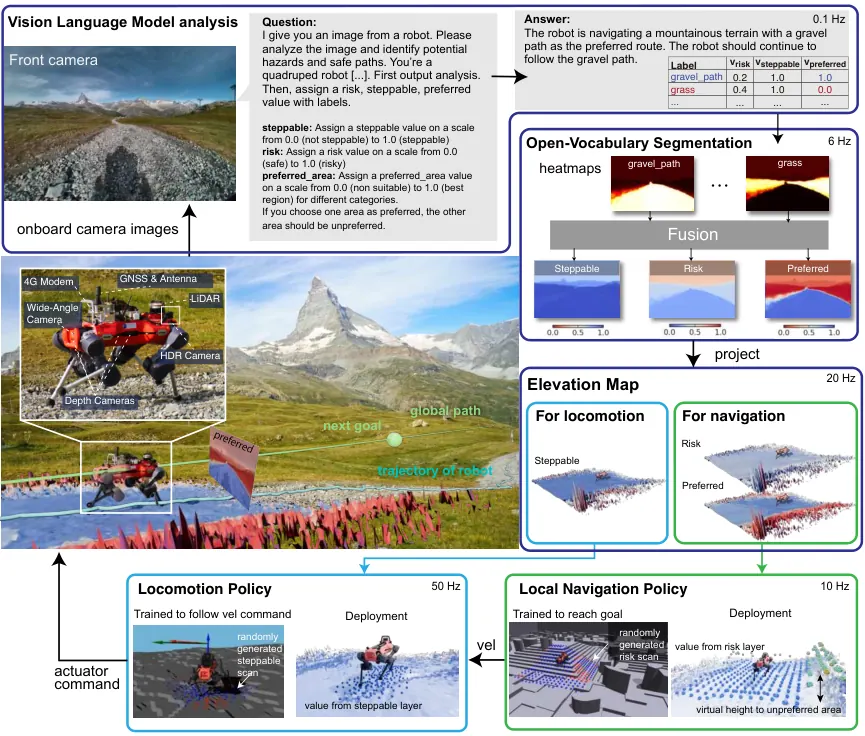
무슨 문제인가
기존 야외 traversability 추정은 기하 정보에 기대므로 높은 풀, 물, 진흙처럼 형상으로 드러나지 않는 위험을 놓침. 정해진 길로 다녀야 한다는 규범도 반영하지 못하고, 고정 label set으로 학습한 semantic segmentation은 처음 보는 환경에 맞추기 어려움. VLM은 이런 상식 판단을 할 수 있지만, 관절 명령을 직접 내는 VLA는 사족 로봇 demonstration이 부족하고 고주파 보행 제어를 따라가기에 느림. VLM이 waypoint나 pixel 좌표를 직접 내게 하는 방법은 정밀한 공간 추론을 요구하는데, 저자들은 현재 VLM이 이 부분에서 약하다고 봄.
어떻게 푸나
ROAM(Robust Open-world Autonomous Mobility)은 VLM에게 공간 판단을 맡기지 않고 장면의 의미 해석만 맡김. VLM은 RGB 영상, 로봇 설명, 출력 값 범위, 이전 질의와 응답을 입력으로 받음. 출력은 장면 속 지형·물체 label과 label마다 붙은 risk, steppable, preferred 값(각각 0~1)임. open-vocabulary segmentation이 이 label로 label별 heatmap을 만들고, 이를 합쳐 dense한 risk·steppable·preferred 영상을 만든 뒤 2.5D elevation map에 투영함. 보행 policy는 steppable 층을 보고 발 디딜 곳을 고르며 속도 명령을 따르고, 지역 주행 policy는 risk 층과 preferred 층을 보고 목표까지 가는 속도 명령을 냄. 두 policy는 시뮬레이션에서 무작위로 만든 height·steppable·risk scan으로 RL 학습하므로 사진 수준의 시뮬레이터가 필요 없음.
결과
- 스위스 알프스 Zermatt 산길(10.1 km, 고도차 1220 m)에서 시간 기준 자율 비율이 96.7%임. 사람 개입은 2번이었고, 둘 다 공사 구역에서 segmentation이 울타리와 공사 지형을 제대로 가르지 못해 생김. Seealpsee 호수 둘레 2.38 km 경로에서는 97.5%임.
- VLM 출력 형태 비교(정지 영상 27장, 사람이 표시한 안전·선호 영역 기준)에서 경로 pixel 중 안전 영역 비율은 ROAM label에 A*로 경로를 짠 경우 0.991임. VLM이 pixel 좌표를 직접 낸 두 방식은 0.714와 0.670, 직선 경로는 0.900임. 선호 영역 비율은 0.868 대 0.398·0.363·0.550이고, 목표 도달은 27장 중 27장 대 3~5장임.
- 취리히 캠퍼스 1.2 km 코스에서 기하 정보만 쓰는 Field Local Planner, 목표 영상을 따르는 ViNT와 비교함. ROAM은 공사 표지판을 읽고 풀밭으로 돌아간 뒤 종료 표지판을 보고 길로 돌아왔고, 두 baseline은 표지판에 반응하지 않음. 길에 눕힌 마네킹은 두 baseline 모두 밟음.
- 계단 사진 27장(실측 높이 13.0~18.0 cm)에서 Gemini 3.0·3.5의 높이 추정 평균 절대 오차는 약 0.7 cm, Gemini 2.5는 약 1.8 cm임. 15 cm 제한을 주면 최신 모델도 15.5~16.0 cm 계단을 낮은 위험으로 판정함. 저자들은 이를 근거로 물리 한계 판단은 elevation map과 policy가 맡아야 한다고 주장함.
한계
장거리 실험은 경로마다 1회이고, 자율 비율은 시간 기준이라 실패 횟수를 직접 보여 주지 않음. baseline과의 실로봇 비교는 상황별 1회 정성 시연뿐이라 성공률 수치가 없고, 정량 비교는 RL policy 대신 A*를 쓴 정지 영상 실험임. 현장 실험은 클라우드 상용 VLM에 기대고 추론 지연을 메우려고 별도 sign detector를 덧붙였으며, 코드 저장소 주소는 본문에서 확인 불가임.
누리랩 연구와의 연결
- VLM 출력을 label과 값으로 제한한 설계는 VLN과 semantic mapping 연구에서 VLM 출력 단위를 정할 때 비교 기준으로 쓸 수 있음.
- VLM이 pixel 좌표를 직접 낼 때 안전 비율이 0.714에 그치고 cm 단위 높이 판단이 틀린다는 결과는, VLA에 공간 추론까지 맡길 때 생기는 failure mode를 진단하는 근거가 됨.
9
72점
Stuck in Place: Stall Diagnosis and Remedies for JEPA Planners
World Model
relevance 8/10
Robotics (cs.RO)
JEPA world model로 MPC planning을 하는 agent의 실패 대부분이, 물체는 그대로인데 model은 진전을 예측하며 같은 계획을 되풀이하는 정지 상태(stall)임을 closed loop 추적으로 보임. 배포 전 fine-tuning에 더해 실행 중에는 가중치를 고정한 채 이 반복을 끊는 Unstick으로 PushObj T 모양 성공률을 53.3%에서 78.7%로 올림.
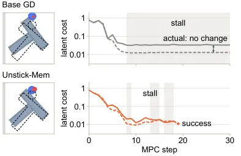
무슨 문제인가
JEPA(joint-embedding predictive architecture) world model은 미래 frame의 embedding을 예측하고, MPC가 이 예측으로 goal embedding에 다가가는 action을 매 step 다시 최적화함. 이런 planner가 실패하면 test-time adaptation 연구들은 distribution shift에서 생긴 model 오차로 보고, 실행 중인 episode로 가중치를 갱신함. 그러나 MPC는 자기 행동이 만든 상태에서 다시 계획하므로, 상태를 바꾸지 못하는 오차는 매 replan마다 되풀이될 수 있음. 기존 분석은 계획이나 후보 action의 점수만 보았고, 실행되는 planning loop 자체에서 실패가 어떻게 생기는지는 확인하지 않았음.
어떻게 푸나
저자는 먼저 진단 단계에서 실행된 action을 simulator에 다시 넣어 실제 상태를 복원하고, MPC step 20~30 동안 block이 5 px·5도 미만으로 움직인 episode를 stall로 분류함. stall 상태에서는 model이 제자리에 머무는 계획을 실제보다 좋게 평가하고, 이전 계획에서 warm start하는 gradient descent(GD) planner가 같은 상태에서 거의 같은 계획을 다시 내놓아 고정점에 빠짐. 이 두 원인에 맞춰 Unstick은 배포 전 on-policy fine-tuning과 가중치를 고정한 test-time loop breaker 하나(Unstick-Mem 또는 Unstick-ReInit)를 묶음. on-policy fine-tuning은 별도 episode에서 base planner가 실행한 궤적으로 predictor 마지막 block과 encoder projection head를 미리 학습함. Unstick-Mem의 residual memory는 실행한 chunk마다 (latent, action) key와 one-step 예측 오차를 저장하고, 계획 중 가까운 입력의 예측에 kernel 가중 평균으로 그 오차를 더함. 그래서 제자리 chunk를 다시 고르면 model도 제자리에 머문다고 예측함. Unstick-ReInit은 warm start 대신 매 replan을 무작위 계획에서 시작해 같은 상태에서 같은 계획이 나오지 않게 함.
결과
- 진단: PushT(T자 block을 목표 자세로 미는 과제)와 PushObj(여러 모양 block을 미는 과제)의 15개 설정 중 12개에서 실패의 96% 이상이 stall임. T 모양 stall에서 model은 chunk당 0.030의 cost 감소를 예측하지만 실제 감소는 0임. MPC step 25의 stall 101개 중 planner가 더 좋은 계획을 찾지 못해서 생긴 경우는 없었음.
- PushObj(block을 목표 자세로 미는 과제, 학습 모양 4개·처음 보는 모양 3개)의 T 모양에서 GD 성공률이 base 53.3%에서 Unstick-Mem 78.7%, Unstick-ReInit 76.0%로 오름. 매 chunk 가중치를 갱신하는 AdaJEPA는 84.7%임.
- AdaJEPA가 base 대비 얻은 성공률 향상 중 Unstick-Mem이 되찾은 비율은 모양 7개에서 91%, 시각 조건 7개에서 72%임. Unstick-ReInit은 각각 88%, 31%임. MPC step당 시간은 Unstick-Mem 7.4초, base 6.7초, AdaJEPA 8.3초임.
- 다른 world model에서는 효과가 줄어듦. DINO-WM에서 Unstick-Mem 성공률은 base와 같은 52.0%임. PointMaze-Medium에서는 fine-tuning을 붙이면 두 방법 모두 base보다 낮아짐.
한계
모든 실험은 2D 시뮬레이션(PushT, PushObj, PointMaze)이고 실로봇 실험은 없으며, 진단은 한 JEPA 계열과 GD planner 위주임. CEM planner에서는 memory가 fine-tuning에 더하는 효과가 작고, encoder가 block 각도를 잃는 red block 조건이나 objective의 local minimum이 원인인 PointMaze에서는 두 방법 모두 거의 효과가 없음. memory는 episode 길이에 따라 커지고, fine-tuning에는 평가와 별도인 base planner 실행 데이터가 필요함.
누리랩 연구와의 연결
- world model planner의 실패를 open-loop 예측 오차가 아니라 closed loop에서 상태 변화와 계획 반복으로 판정하는 진단 절차임. failure detection·recovery 연구에서 latent MPC 기반 manipulation policy를 점검하는 기준으로 쓸 수 있음.
- 가중치 갱신 없이 episode 안의 예측 오차를 저장해 쓰는 residual memory는 test-time optimization과 robot memory를 잇는 간단한 baseline임. test-time adaptation 방법과 비교할 때 함께 넣어 볼 만함.
10
70점
One Prior, Two Dynamics: Repurposing Video Diffusion Transformers for Self-Supervised Latent Action Learning
World Model
relevance 8/10
Computer Vision and Pattern Recognition (cs.CV)
사전학습된 video DiT 하나를 inverse dynamics와 forward dynamics 양쪽의 초기값으로 써서, 행동 라벨 없는 영상에서 latent action을 학습함. 사람 손 영상만으로 학습했는데도 GR-1 휴머노이드 로봇 end-effector 동작의 linear probing R²가 0.277로, 기존 latent action 방법 DreamDojo의 0.149보다 높음.
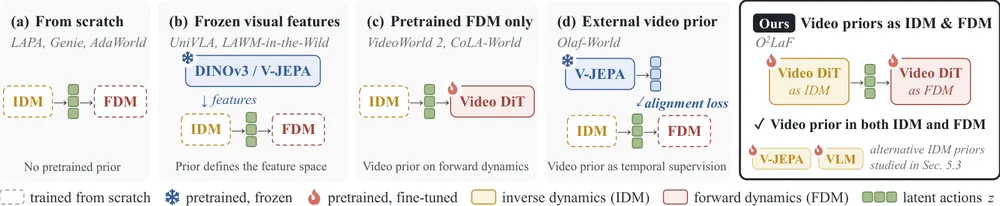
무슨 문제인가
Latent action learning은 두 frame 사이의 행동을 추정하는 IDM(inverse dynamics model)과, 그 행동으로 다음 frame을 예측하는 FDM(forward dynamics model)을 함께 학습함. 기존 방법은 IDM을 처음부터 학습하거나 고정된 visual feature 위에서 학습하므로, 영상 변화에 대한 사전 지식을 IDM에서 거의 쓰지 못함. 사전학습된 video generator를 FDM으로 쓰는 방법도 있음. 다만 일반 diffusion 학습 방식을 그대로 쓰면 generator가 latent action을 무시하고 noisy target만으로 미래를 맞힐 수 있음. 라벨 없는 대규모 영상에서 로봇에 옮겨 쓸 행동 표현을 얻으려면 두 모델에 사전 지식을 넣으면서 각 모델이 보는 정보를 통제해야 함.
어떻게 푸나
O2LaF(One Prior, Two Dynamics Latent Action Framework)는 IDM과 FDM을 같은 Wan2.2-TI2V-5B video DiT에서 시작해 각각 rank-128 LoRA로 따로 적응시킴. IDM은 영상 latent를 한 번만 forward pass하고, 전이 x_i→x_{i+1}마다 학습되는 action query 하나를 둠. 각 query는 두 끝 frame만 읽고 다른 query나 video token에 정보를 넘기지 않음. query 출력은 Gaussian head를 거쳐 32차원 latent action이 됨. FDM은 깨끗한 첫 frame과 latent action 열을 받아 이후 frame 전체를 한 번에 denoise하고, frame-causal attention으로 뒤 frame을 보지 못하게 함(causal joint prediction). 이전 frame을 깨끗하게 주는 autoregressive 예측은 앞 frame을 복사하는 shortcut이 생기므로 쓰지 않음. FDM의 flow timestep은 높은 noise 쪽에 몰아서, noisy target에 남은 정보로 미래를 맞히는 경로를 줄임. 두 모델은 flow matching loss와 KL 항으로 end-to-end 학습됨. 추론 때 FDM은 다른 첫 frame에 latent action을 넣어 영상을 만드는 world model로 쓰임.
결과
- In-lab Eval(DreamDojo의 GR-1 로봇 demonstration 평가 세트)에서 고정된 latent action에 Ridge regression probe를 붙여 양팔 end-effector 이동·회전을 맞힘. EgoDex 사람 손 영상만으로 학습한 O2LaF의 EEF(end-effector) R²는 0.277임. 대규모 1인칭 사람 영상으로 학습해 공개된 기존 latent action 방법 DreamDojo는 같은 평가에서 0.149임.
- MIND(1인칭·3인칭 camera navigation 평가 세트)에서 reference 영상의 latent action을 다른 첫 frame에 옮겨 영상을 생성함. 3인칭 회전 오차(RPE)는 0.330으로, 기존 latent action 방법 Olaf-World의 0.701보다 낮음. 1인칭 이동 오차(NRMSE)는 1.289 대 1.627임. 공정한 비교를 위해 각 방법의 latent action마다 같은 구조의 bidirectional FDM을 따로 학습해 영상을 생성함.
- 사람 영상의 latent action을 로봇 첫 frame에 옮겨 영상을 만들고, 다시 사람 첫 frame으로 되돌려 원본과 비교함. 이 cycle 재구성 PSNR은 24.30으로 DreamDojo 22.61보다 높음. 로봇→사람→로봇 cycle에서는 PSNR 18.85 대 18.35, LPIPS 0.163 대 0.165로 차이가 작음.
- FDM 설계 비교에서 MIND 1인칭 영상의 camera 동작을 latent action으로 맞히는 probing 정확도(k=50, exact match)는 FDM을 causal joint로 두면 87.95%, autoregressive로 두면 70.13%임. IDM의 출발점을 자기지도 예측 영상 encoder V-JEPA2로 바꾸면 같은 MIND 1인칭 probing 정확도가 88.62%로 더 높음. 그러나 latent action에서 원본 장면 밝기가 R² 0.514로 복원되어 외관 정보가 섞여 들어감.
한계
실험은 모두 오프라인 영상 평가(linear probing, 영상 생성, cycle 재구성)이고, latent action으로 policy를 학습하거나 실로봇에서 closed-loop로 실행한 결과는 없음. 로봇 평가는 GR-1 demonstration 영상에 한정되고, 사람과 로봇 사이 직접 전이는 정성 평가만 있음. FDM을 policy 검증에 쓰는 부록 실험은 사례 3개의 정성 결과이며, 본문에는 project page 주소만 있고 코드 주소는 확인 불가임.
누리랩 연구와의 연결
- 라벨 없는 사람 영상에서 로봇 end-effector 동작과 선형으로 대응되는 latent action을 얻는 방법이라, VLA의 latent action pretraining(LAPA 계열)에서 IDM을 바꿔 볼 후보임.
- 부록에서 FDM rollout이 simulator 결과와 어긋나는 경우를 실행 전 경고로 쓰는데, world model 기반 failure detection 연구의 비교 사례로 볼 수 있음.
11
68점
Risk-Controlled Test-Time Adaptation for Vision-Language-Action Models
VLA
relevance 9/10
Computer Vision and Pattern Recognition (cs.CV)
retrieval-augmented VLA가 직접 행동할지 전문가에게 행동을 요청할지를 학습된 uncertainty로 정하고, 그 threshold를 사용자가 정한 task 실패율을 통계적으로 만족하도록 calibration함. LIBERO 4개 suite에서 π0-FAST 기준 평균 성공률이 기존 retrieval 방식 RICL의 62.8%에서 72.0%로 오르고, 이때 step의 49.0%에서 expert 행동을 받음.
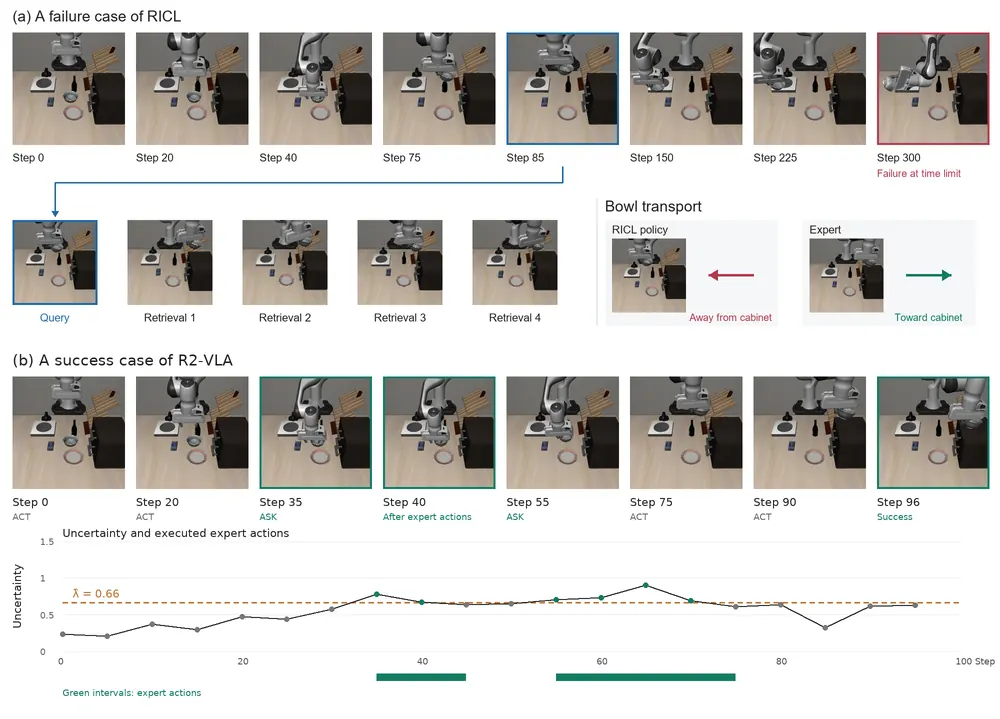
무슨 문제인가
RICL(Re-training for In-Context Learning)은 VLA 가중치를 바꾸지 않고, 현재 화면과 DINOv2 특징이 가까운 expert demonstration frame을 검색해 context로 넣어 새 과제에 적응함. 그런데 같은 과제의 관련 demonstration을 검색해도 VLA가 그 정보를 잘못 써서 실패하는 경우가 있음. 논문 그림 1에서는 RICL이 그릇을 cabinet 반대쪽으로 옮겨 시간 제한에 걸림. 따라서 검색 품질을 높이는 것만으로는 성공이 보장되지 않고, 배치할 때 요구 성공률을 지키려면 VLA가 언제 틀릴지 알아야 함.
어떻게 푸나
R2-VLA는 먼저 RICL 방식으로 VLA를 학습한 뒤 고정하고, 가벼운 MLP uncertainty head만 따로 학습함. 이 head는 첫 action token 위치에서 VLA 마지막 층의 hidden state를 입력받아, 예측 action chunk와 expert action 사이의 차원별 표준편차로 정규화한 RMSE를 예측함. 잘못 검색된 경우의 높은 오차도 배우도록, 학습 데이터의 30~50%에는 다른 과제, 다른 단계, 같은 장면의 다른 목표, 무작위 demonstration을 일부러 검색해 넣음. 배포 때는 매 step 예측 uncertainty가 threshold λ 이하면 VLA 행동을 실행(ACT)하고, 넘으면 expert 행동을 요청(ASK)함. λ는 Learn-then-Test 방식으로 정함: 후보 λ마다 보정용 episode를 실제로 돌려 실패 수를 세고, binomial 검정과 Bonferroni 보정을 통과한 후보 중 ASK 비율이 가장 낮은 것을 고름. 연속 적응 단계에서는 ASK로 받은 expert 행동을 검색 buffer에 추가하고, 새 보정 episode로 λ를 다시 정함. 저자는 실패 위험의 상한(Theorem 1)과 buffer 갱신 뒤에도 위험 보장이 유지됨(Theorem 2)을 증명함.
결과
- LIBERO(Franka 팔 시뮬레이션 조작 benchmark, Spatial·Object·Goal·Long 4개 suite)에서 과제당 100회 평가함. 평균 성공률이 RICL 대비 MiniVLA 51.8%에서 62.8%, π0-FAST 62.8%에서 72.0%, OpenVLA 57.4%에서 68.6%로 오름. 이때 평균 ASK 비율은 각각 20.8%, 49.0%, 33.3%임.
- VLA 3개와 suite 4개의 12개 조합마다 목표 성공률을 RICL보다 5퍼센트포인트 안팎 높게 잡았고, 11개 조합에서 목표를 달성함. π0-FAST의 Object suite는 78.9%로 목표 80.0%에 못 미침.
- 같은 ASK 비율로 무작위 시점에 expert를 부르는 Random ASK와 비교하면 평균 성공률이 π0-FAST 72.0% 대 65.5%, MiniVLA 62.8% 대 54.9%, OpenVLA 68.6% 대 60.3%임.
- 같은 risk control에 다른 uncertainty 신호를 쓴 경우, π0-FAST에서 DINO 거리는 성공률 68.1%·ASK 59.6%, action entropy는 70.2%·59.1%이고 R2-VLA는 72.0%·49.0%임.
한계
실험은 LIBERO 시뮬레이션뿐이고 실로봇 실험이 없으며, ASK 때 행동을 주는 expert는 사람이 아니라 따로 학습한 expert policy임. π0-FAST의 Long suite에서는 decision point의 66.3%에서 expert를 불러, 목표 달성의 상당 부분을 expert가 맡음. 후보 threshold마다 보정 episode(기본 200개)를 실제로 돌려야 하고 보정 episode가 배포 분포에서 독립으로 뽑힌다고 가정하며, 본문에 코드 주소가 없음.
누리랩 연구와의 연결
- VLA 행동 단위의 failure prediction을 task 단위 성공률 보장과 묶은 예라, VLA failure detection·recovery 연구에서 threshold를 정하는 절차의 비교 기준으로 쓸 수 있음.
- expert 교정을 검색 buffer에 쌓고 위험 보장을 유지하며 다시 calibration하는 구조는, robot memory 기반 test-time adaptation에서 memory 갱신 뒤 안전 기준을 다시 맞추는 문제와 바로 이어짐.
12
68점
Don't Lose the Future: Latent-Aware 4-Bit Quantization of World Action Models
World Model
relevance 9/10
Artificial Intelligence (cs.AI)
world action model(WAM)을 4-bit로 양자화할 때 action만이 아니라 예측된 미래 latent를 보존 대상으로 삼고, 한 번 생긴 반올림 오차가 이후 denoising step에서 몇 번 다시 쓰이는지에 따라 token마다 정밀도를 다르게 줌. LIBERO-Plus에서 Fast-WAM 평균 성공률이 76.4%로 BF16 모델(77.6%)과 1.2퍼센트포인트 차이임.
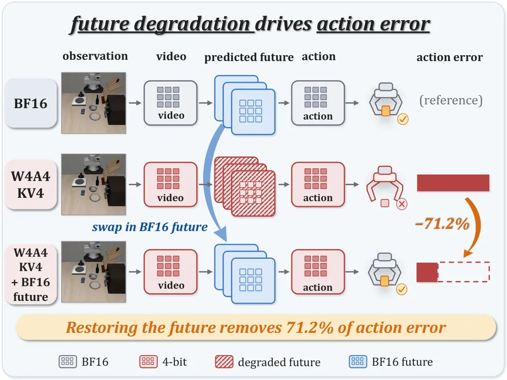
무슨 문제인가
WAM은 장면이 어떻게 변할지 예측한 미래 latent를 만들고, 이 미래를 조건으로 action을 냄. Fast-WAM은 parameter가 6B이고 BF16 weight만 12 GB라서, 16 GB를 로봇 프로그램과 나눠 쓰는 Jetson Orin NX에 올리기 어려움. 그래서 weight·activation·key-value cache를 모두 4-bit로 두는 W4A4KV4가 필요함. 기존 WAM 양자화 방법은 최종 action에 대한 민감도를 denoising step 하나씩 따로 재서 action 경로를 보호함. 저자들은 Fast-WAM에서 action 경로를 보호해도 action 오차가 16%만 줄고, 예측 미래를 BF16 값으로 바꿔 넣으면 남은 action 오차의 71.2%가 사라짐을 보임.
어떻게 푸나
LAQ(Latent-Aware Quantization)는 학습 없이 BF16 WAM과 calibration context 80개를 받아 W4A4KV4 모델을 내는 post-training quantization임. 저자는 예측 미래를 action으로 바꾸는 계산을 reader라 부르고, 미래 latent 오차를 reader 출력 변화로 재는 Gauss-Newton 행렬(reader metric)을 추정함. read count는 한 번 생긴 반올림 오차가 몇 개 denoising step에서 다시 읽히는지를 센 값이며, weight·cache·변하지 않는 관측 token의 오차를 매 step 새로 생기는 오차보다 크게 가중함. 두 값을 action 오차·미래 오차·reader 오차를 합친 목표식에 넣으면, activation과 cache 중 어떤 token에 정밀도를 더 줄지가 임계값 하나로 정해짐. 실행 중에는 gaze-guided refinement가 선택된 token의 1차 4-bit 양자화 잔차를 한 번 더 4-bit로 양자화함. 선택할 token은 직전 control step에서 action token이 각 token에 준 attention(gaze)으로 고르며, 모든 weight는 4-bit이고 16-bit branch나 과제별 재보정은 없음.
결과
- LIBERO-Plus(LIBERO 4개 suite에 카메라 시점·센서 noise 등 7종 교란을 더한 시뮬레이션 조작 benchmark)에서 Fast-WAM 평균 성공률은 LAQ 76.4%, BF16 77.6%임. 가장 강한 baseline인 diffusion 모델용 양자화 방법 SVDQuant는 73.0%임. baseline은 cache를 BF16으로 두고, LAQ는 cache도 4-bit로 둔 조건임.
- parameter 2B인 다른 WAM Cosmos-Policy에서는 LAQ 83.3%, BF16 83.5%, diffusion 모델용 양자화 방법 ViDiT-Q와 SVDQuant 82.9%로 baseline과의 차이가 0.4퍼센트포인트임. 원래 LIBERO에서는 BF16과 모든 baseline이 98% 근처라 방법 간 차이가 거의 없음.
- Fast-WAM ablation에서 같은 budget으로 token 선택 기준만 바꾸면, 기존 WAM 양자화 방식인 step별 action 민감도는 72.9%, 무작위 선택은 72.5%, LAQ는 76.4%임. reader metric을 단위행렬로 바꾸면 73.6%, read count를 모두 1로 두면 74.0%로 내려감.
- 실제 AgileX PiPER 팔에서 Fast-WAM으로 과제 3개를 과제·방법당 25회 평가함. 평균 성공률은 과제 3개를 항목 4개(pick-and-place의 사과 넣기와 두 물체 모두 넣기, 선반 넣기, 상자 쌓기)로 나눠 잰 값의 평균임. LAQ 47.0%, BF16 52.0%, 범용 양자화 방법 QuaRot 17.0%임. A100에서 policy peak memory는 14.0 GB에서 6.0 GB로, 1회 호출 지연은 1475 ms에서 888 ms로 내려감.
한계
효율은 A100에서만 측정했고, 동기로 든 Jetson Orin NX에서의 메모리·지연은 본문에서 확인 불가임. Cosmos-Policy에서 baseline과의 차이는 0.4퍼센트포인트로 작고, 반복 seed나 분산은 보고하지 않음. 기존 WAM 전용 양자화 방법 3개는 공개 구현이 없어 전체 방법으로는 비교하지 못했고, token 선택 기준만 ablation에서 재현함. 실로봇은 Fast-WAM 하나에 과제 3개이며 본문에 코드 주소가 없음.
누리랩 연구와의 연결
- world model 기반 policy를 실로봇에 올릴 때의 메모리·지연 문제를 다룬 사례임. reader metric이 팔과 gripper 주변 token에 몰린다는 분석은 world model의 예측 중 어느 부분이 action에 실제로 쓰이는지 볼 때 참고가 됨.
- 예측 미래를 BF16으로 바꿔 넣어 action 오차 기여를 나누는 실험 방식은, world model 예측 오류가 action 실패로 이어지는 경로를 진단하는 failure detection 연구에 그대로 쓸 수 있음.
13
66점
A$^2$-VLA: Adapting Vision-Language-Action Policies to New Tools through Agentic Affordance Discovery
VLA
relevance 9/10
Robotics (cs.RO)
새 도구에서 어느 부분이 일을 하는지(affordance)를 agent가 시뮬레이션 실험으로 찾아 12차원 벡터로 만들고, 이 벡터를 π0.5에 조건으로 넣음. 실로봇 과제 3개에서 처음 보는 도구의 평균 성공률이 π0.5의 4.7%에서 35.3%로 오름.
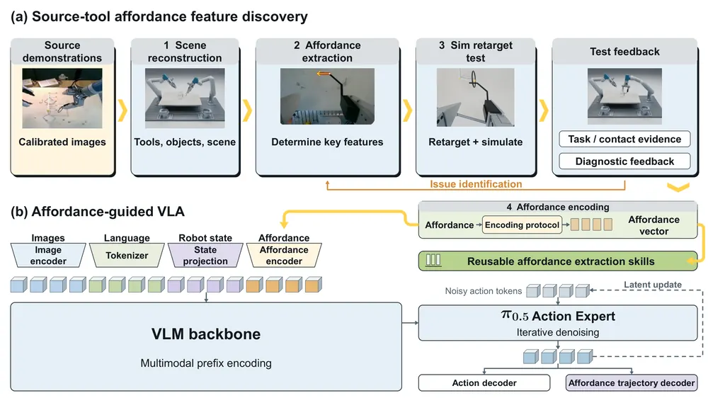
무슨 문제인가
모양이 다른 도구라도 갈고리 끝이나 날처럼 같은 일을 하는 부분이 있지만, VLA는 학습 데이터에 없던 도구 형상을 만나면 성공률이 크게 내려감. 그래서 새 도구마다 demonstration을 다시 모아 fine-tuning해야 함. MimicFunc 같은 기존 도구 전이 방법은 keypoint와 function frame 규칙을 사람이 미리 정해 두므로, 과제마다 어떤 기하 특징이 필요한지를 스스로 정하지 못함. language나 keypoint만으로 도구 기하를 VLA에 전달하는 계층형 방법도 도구의 세부 형상을 다 담지 못함.
어떻게 푸나
A2-VLA는 도구 affordance를 agent가 세우고 시험하고 고치는 가설로 다룸. 먼저 agent(GPT-6 Astra)가 원본 도구 몇 개로 찍은 teleoperation demonstration과 보정된 카메라·로봇 모델로 장면을 시뮬레이션에 다시 만듦(real-to-sim). 이어서 원본 도구들을 비교해 과제에 필요한 기능 부위와 그 기하 특징(위치, 접선 방향, 오목한 쪽 방향 등)을 정하고, 이를 뽑아내는 실행 가능한 extraction skill을 작성함. 다른 도구의 기능 부위 자세가 원본 궤적의 기능 부위 자세를 따라가도록 궤적을 다시 계획(retargeting)하고 시뮬레이션에서 실행함. 실패하면 접촉 정보와 화면을 보고 기능 부위나 skill을 고치며, 통과한 skill은 skill library에 쌓음. VLA 쪽은 π0.5에 12차원 affordance 벡터를 token 하나로 더 넣고, 앞으로의 affordance 궤적을 예측하는 보조 head를 붙여 학습함. 기능 부위 자세를 일부러 흔든 뒤 원래 궤적으로 돌아가게 다시 계획한 counterfactual 데이터를 10% 섞어, policy가 주어진 affordance를 따르도록 함.
결과
- 재구성한 시뮬레이션에서 처음 보는 도구로 궤적을 retargeting한 과제 3개 평균 성공률이 86.1%임. 같은 GPT-6 Astra가 시뮬레이션 시험 없이 affordance를 바로 예측한 Raw VLM은 37.8%, 가장 강한 기존 방법인 물체 간 상대 자세 예측 방법 TAX-Pose는 26.9%임.
- 실로봇(Dobot Nova 2 양팔, 과제 3개)에서 처음 보는 도구의 평균 성공률이 35.3%임. affordance 없는 π0.5는 4.7%, 시뮬레이션 수정 단계를 뺀 변형은 22.0%임.
- 사람이 준 affordance로 학습·추론한 Human Oracle은 처음 보는 도구에서 47.3%임. agent가 찾은 affordance와 사람이 준 affordance 사이에 12퍼센트포인트 차이가 남음.
- agent가 VLA 없이 직접 로봇을 움직인 Agent-Only는 처음 보는 도구에서 25.0%(과제당 20회)임. Cut Sand(도구 날로 모래를 잘라 그릇에 옮기는 과제)에서는 Agent-Only 30%가 A2-VLA 26%보다 높음.
한계
실로봇 성공률은 VLA 방법이 과제당 50회, Agent-Only가 20회로 평가 횟수가 다르고 seed 수는 본문에서 확인 불가임. 시뮬레이션 비교는 agent가 재구성한 장면에서 재므로, 같은 장면을 쓴 수정 단계와 평가가 얼마나 분리됐는지 본문에서 확인 불가임. 저자는 retargeting으로 풀 수 있는 도구 전이에만 적용된다고 밝혔고, 본문에 코드 주소가 없음.
누리랩 연구와의 연결
- 시뮬레이션에서 실패를 보고 affordance와 extraction skill을 고치는 반복 과정은 failure diagnosis를 VLA 입력 수정으로 잇는 사례임. 배포 전에 시뮬레이션으로 policy 입력을 검증하는 연구의 비교 대상으로 쓸 수 있음.
- 기능 부위를 위치·방향 벡터로 만들어 VLA에 넣는 설계는 object-centric 표현을 manipulation policy 조건으로 쓰는 연구와 바로 이어짐.
14
66점
Verify2Act: Critic-Guided Latent World Models for Verifying Language-Conditioned Manipulation Plans
World Model
relevance 8/10
ICRA·IROS·RA-L 계열 양식 (추정)
Robotics (cs.RO)
VLM이 낸 후보 plan을 DINOv2 feature 공간의 world model로 실행 전에 미리 굴려 보고, critic이 검사한 plan만 실행하게 함. 저가 로봇 팔의 블록 조작 과제 6개에서 평균 과제 성공률이 VLM 단독 53.3%에서 83.3%로 오름.
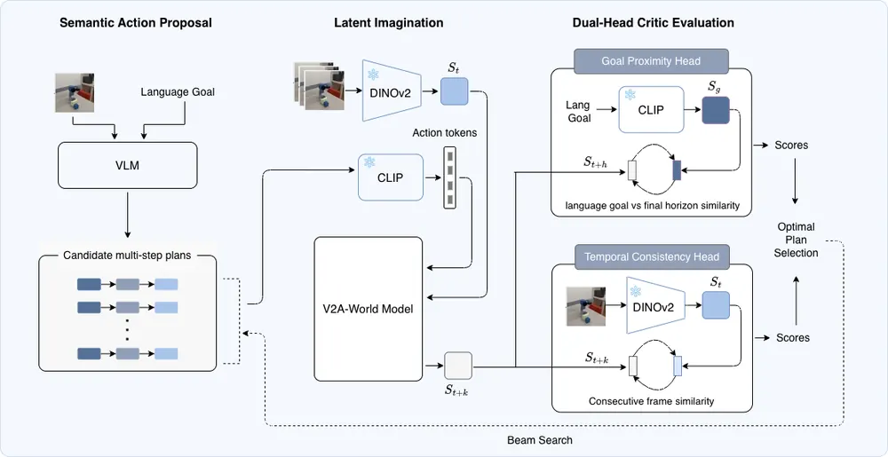
무슨 문제인가
VLM은 여러 단계 조작 plan을 잘 내지만, 행동하면 장면이 어떻게 바뀔지 예측하는 모델이 없어 틀린 plan을 그대로 실행함. 이를 확인하려고 pixel 공간에서 미래 영상을 만드는 world model을 붙이면 계산이 오래 걸리고, 단계가 길어질수록 이미지가 원래 장면에서 벗어남. DINOv2 feature 위에서 dynamics를 배우는 latent world model(DINO-WM, RLA-WM)은 더 가볍지만, 언어 명령을 특정 물체에 연결하지 못함. 또한 직전 frame만 보는 Markovian 구조라 gripper가 물체를 가리면 그 물체 정보를 잃음.
어떻게 푸나
Verify2Act는 plan 제안, latent 상상, critic 검증의 세 단계를 반복함. 먼저 GPT-4o가 현재 RGB 영상과 언어 목표를 받아 primitive skill 문자열로 된 후보 plan 3개(각 4단계)를 한 번의 호출로 냄. V2A-WM(이 논문의 world model)은 고정된 DINOv2 patch feature를 상태로 쓰고, 두 frame 사이 feature 차이를 autoencoder로 압축한 latent를 flow matching으로 예측함. RLA-WM과 달리, CLIP으로 인코딩한 행동 문장 token에 patch feature가 cross-attention하므로 명령이 해당 물체 patch에 연결됨. 또한 과거 몇 frame과 각 frame이 실제로 있는지 표시하는 validity mask를 함께 보는 causal history window를 둬서 가려진 물체 정보를 유지함. critic의 temporal consistency head는 이웃한 상상 상태가 이어지는지 점수와 불확실도를 내고, goal head는 마지막 상상 상태의 patch token과 목표 문장으로 목표 달성 확률을 냄. 두 점수의 가중합이 기준값을 넘는 plan을 실행하고, 없으면 VLM에 reflection을 요청해 최대 2번 다시 제안받음. 실로봇용 world model과 critic은 MuJoCo로 만든 작업대 digital twin 데이터로만 학습하고, 실행 때는 카메라 영상에서 블록·카메라 자세를 맞춰 twin 영상으로 다시 그려 입력함(real2sim alignment).
결과
- Yahboom DOFBOT 실로봇에서 블록 과제 6개를 과제당 10회 실행함. 평균 과제 성공률은 Verify2Act 83.3%, latent world model RLA-WM 61.7%, VLM 단독 53.3%, pixel diffusion world model 46.7%임. 모든 방법이 같은 GPT-4o, prompt, low-level skill을 씀.
- plan 자체의 정답률은 VLM 단독도 93.3%였고 Verify2Act는 100%임. 그래서 성공률 차이 대부분은 정답 plan을 실행하다 실패한 비율에서 생김. 전체 episode 대비 실행 실패 비율은 VLM 단독 43.3%, Verify2Act 16.7%임. 다만 원문 표의 VLM 단독 값은 성공률·plan 실패 비율과 합이 맞지 않음. 같은 skill을 쓰는데 왜 실행 실패가 줄었는지는 본문에서 설명하지 않음.
- 실제 장면 42개에서 가능한 plan을 모두 시뮬레이션해 정답을 매기고 plan 순위를 비교함. real2sim 없이 카메라 영상만 넣었을 때 정답 plan을 1위로 고른 비율이 V2A-WM 71.4%, RLA-WM 23.8%, 무작위 약 6%임.
- CALVIN(언어 지시 조작 과제 5개를 연속 수행하는 시뮬레이션 benchmark)에서 5개 모두 성공한 비율이 75%로, 영상 예측 사전학습 policy GR-1의 73.1%와 VLM 단독 70%보다 높음. 성공률 차이는 몇 개 sequence 수준이라 결정적 증거가 아니라고 저자도 밝힘. CALVIN 평가 전체에서 VLM reflection 호출은 15회로 pixel diffusion world model의 444회보다 적음.
한계
실로봇 평가는 책상 위 블록 4개와 pick-and-place skill 3종, 과제당 10회뿐임. 계획 한 번에 24초가 걸려 VLM 단독의 3.4초보다 길고, real2sim alignment는 책상 위에 놓인 블록에만 적용됨. Cluttered Nut Assembly는 robosuite에서 너트 여러 개가 흩어진 장면의 너트 조립 시뮬레이션 과제임. 여기서는 critic이 통과시킨 plan의 성공률(precision)이 Verify2Act 61.8%로 pixel diffusion world model 78.9%보다 낮음. 코드 공개 여부는 본문에서 확인 불가임.
누리랩 연구와의 연결
- world model을 policy 학습이 아니라 실행 전 plan 검증에 쓴 구조임. failure detection과 test-time plan selection 연구에서 latent world model 기반 baseline으로 쓸 수 있음.
- 실제 장면에서 가능한 plan을 모두 시뮬레이션해 정답을 매기고 top-1 순위를 재는 평가 방식은, 실행 noise와 분리해 verifier 품질만 재는 실험 설계로 가져다 쓸 수 있음.
15
66점
GEMS: Generation and Experience Memory for Subgoal-Guided Long-Horizon World Model Planning
World Model
relevance 8/10
Robotics (cs.RO)
고정된 latent world model로 먼 목표를 계획할 때, 생성한 중간 subgoal과 학습 데이터에서 찾은 실제 frame 중 하나를 거리 기준으로 골라 planner의 목표로 씀. planner는 행동 후보를 표본 추출해 좋은 것을 남기는 CEM(cross-entropy method)임. 150 step 앞 목표를 주는 Cube에서 성공률이 가장 강한 baseline SAGE의 68.8%에서 92.8%로 오름.
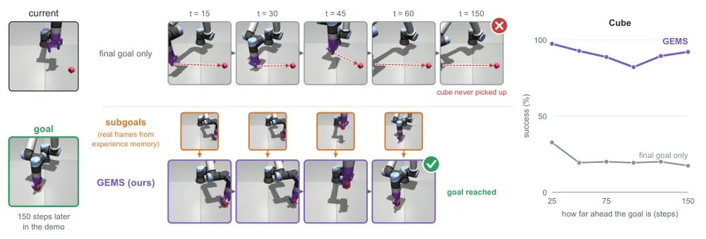
무슨 문제인가
visual world model planning은 후보 행동의 예측 결과를 목표 이미지의 latent와 비교해 행동을 고름. 목표가 멀면 rollout 오차가 쌓이고, 먼 목표와의 latent 거리로는 후보 간 우열을 가리기 어려움. 이를 줄이려고 중간 subgoal을 쓰는 방법이 두 갈래로 있음. 생성 모델로 만든 subgoal은 물체 위치나 시점이 틀릴 수 있고, 저장된 경험에서 고르는 방법은 데이터가 덮는 범위에 묶이며 다음에 어느 상태를 목표로 할지 고를 기준이 약함.
어떻게 푸나
GEMS(Generation and Experience Memory for Subgoal planning)는 encoder와 world model(LeWM)을 고정하고 subgoal generator와 CEM에 초기 행동 분포를 주는 action prior만 학습함. generator는 최근 관측 3개의 latent, 목표 latent, 목표까지 남은 step 수 Δ, 다음 subgoal까지의 step 수 τ(기본 15)를 받아 τ step 뒤의 latent를 출력함. Δ와 τ는 함께 정규화하지 않고 따로 Fourier feature로 embedding함. 출력은 현재 latent와 목표 latent 사이를 min(τ/Δ, 1) 비율로 보간한 anchor에 Transformer decoder가 예측한 residual을 더한 값임. 이 subgoal로 LEM(Latent Experience Memory: 학습 궤적의 모든 frame을 같은 encoder로 인코딩해 둔 저장소)에서 가장 가까운 latent를 찾음. 둘의 거리가 임계값 λ 이하이면 저장된 frame을, 넘으면 생성한 subgoal을 CEM의 비용 목표로 씀. λ는 과제마다 후보 4개(0, 무한대, subgoal과 메모리 frame 거리의 중앙값, generator 오차의 중앙값) 중 validation 성공 수가 가장 많은 값으로 정하고, τ step마다 다시 계획함.
결과
- 조작 과제 4개에서 성공률이 가장 높음. Cube(OGBench의 단일 큐브 집어 옮기기, 목표 150 step 앞)에서 92.8%로 SAGE의 68.8%보다 24.0퍼센트포인트 높음. Meta-World(조작 과제 6개 모음)에서는 54.1% 대 31.9%임.
- Cube-double(큐브 2개, 목표 75~255 step 앞)에서는 17.7%이고 다른 방법은 모두 1% 미만임. 같은 조건에서 전문가의 실제 미래 frame을 subgoal로 쓰는 기준선은 35.6%라서 아직 차이가 큼.
- Cube에서 큐브를 먼저 잡아야 하는 test query 236개의 성공률은 87.9%이고 baseline은 모두 48.4% 이하임. 경험 메모리를 빼면 79.4%로 내림.
- ablation에서 Δ·τ를 따로 embedding하면 메모리 없이도 Cube 성공률이 67.6%에서 87.7%로 오름. 메모리를 더하면 Meta-World는 46.2%에서 54.1%로 오르지만 Push-T(T자 block을 목표 자세로 미는 과제)는 70.4%에서 68.4%로 내림.
한계
모든 실험은 시뮬레이션이고 실로봇 실험은 없으며, 본문에 코드 주소가 없음. 경험 메모리는 test와 같은 분포의 학습 궤적에 기대고, 큐브 2개처럼 상태 조합이 많은 과제에서는 메모리 frame의 큐브 위치가 26~32 cm 어긋남. 메모리 사용 여부를 정하는 λ를 과제마다 validation으로 골라야 하고, TwoRoom·Reacher(navigation·reaching)에서는 기존 방법 대비 이득이 없음.
누리랩 연구와의 연결
- world model 기반 test-time planning에 robot memory를 붙이는 구체적 설계임. 생성 subgoal과 저장 frame 중 무엇을 믿을지 거리로 고르는 gate는 world model 예측의 신뢰도 판단 연구에서 비교 대상으로 쓸 수 있음.
- 큐브 잡기 전 단계를 건너뛰는 subgoal 비율을 latent probe로 잰 분석(15.5%에서 3.2%로 내림)은 long-horizon manipulation의 실패 원인 진단 방법으로 참고할 만함.
오늘의 흐름
- world model을 실행 전 검사와 실패 진단에 씀: world model planner가 왜 실패하는지 가르거나, 실행 전에 plan과 후보 행동을 검사하는 데 씀. 오늘 Top 15 중 네 편이 이 쓰임새임: Search or Scoring?, Stuck in Place, Verify2Act, AFFECT(world model 속 성공률이 실제 성공률을 따르도록 행동에 따른 영상 변화를 맞추는 보조 loss).
- 실로봇 데이터 없이 policy를 post-training함: WEVO는 video world model 속 rollout으로 VLA를 RL로 고침. CoachSI는 VLM coach가 고른 지시문으로 simulator에서 얻은 성공 rollout을 모아 WAM을 fine-tuning함. WAM(world action model)은 미래 영상과 action을 함께 내는 모델임. 두 편 모두 post-training 전 policy보다 높은 성공률을 보고함: WEVO, CoachSI.
- WAM을 가볍게 하거나 넓힘: WAM의 추론 비용을 같은 block 반복 사용(LoopedWAM)과 4-bit 양자화(Don't Lose the Future)로 줄임. 로봇 여러 대로도 넓힘(MAWAM): LoopedWAM, Don't Lose the Future, MAWAM.
- memory를 policy와 planner의 조건으로 넣음: memory를 subtask 추론의 hidden state(ActMem), planner의 목표 frame(GEMS), 검색 buffer(R2-VLA) 형태로 넣음. GEMS의 planner는 CEM(cross-entropy method: 후보 action을 뽑아 좋은 것만 남기며 반복하는 방법)임: ActMem, GEMS, R2-VLA.
- VLA를 새 조건에 맞추는 방법: 새 도구의 기능 부위를 시뮬레이션 시험으로 찾아 VLA에 넣거나, 불확실할 때 전문가에게 행동을 요청하는 threshold를 실패율 상한을 지키도록 calibration으로 정함: A2-VLA, R2-VLA.
해볼 만한 연구
world model 검증기가 틀리는 경우를 먼저 가려내기
- 질문: world model로 VLA 후보 action chunk 순위를 다시 매길 때, AFFECT loss가 scoring failure를 줄여 성공률을 올리는지 밝힘.
- 첫 실험: LIBERO(시뮬레이션 조작 benchmark)에서 VLA 후보 여러 개를 world model cost로 고름. 과제의 정답 행동(known solution)을 같은 cost로 채점해, 좋은 후보를 시도하지 못한 경우는 search failure, 정답 행동보다 나쁜 후보에 더 낮은 cost를 준 경우는 scoring failure로 나눔. AFFECT loss를 넣은 world model과 넣지 않은 world model의 scoring failure 비율을 비교함.
- 가장 가까운 연구: Search or Scoring?은 CEM planner만 진단했고 VLA proposal은 다루지 않음. AFFECT는 world model 학습 loss만 바꾸고 planner 실패 유형은 재지 않음.
실행 중 정지 상태를 감지해 language coach를 부르기
- 질문: policy가 같은 행동을 되풀이하는 정지 상태를 실행 중에 world model 예측과 관측의 차이로 감지할 수 있는지 밝힘. 감지할 때만 coach를 불러도 같은 복구 효과가 나오는지도 확인함.
- 첫 실험: RoboCasa365(주방 장면의 단일 skill 과제와 이를 이은 복합 과제를 담은 시뮬레이션 benchmark) 장기 과제에서 비교함. CoachSI처럼 매 action chunk마다 coach를 부르는 조건과, world model이 예측한 과제 진행과 실제 관측의 진행이 어긋날 때만 부르는 조건의 성공률과 coach 호출 수를 잼.
- 가장 가까운 연구: CoachSI는 coach를 매 action chunk마다 부름. Stuck in Place는 simulator로 실제 상태를 복원해 정지 상태(stall)를 사후에 분류했고, 실행 중 감지기는 만들지 않음. 실험도 2D 시뮬레이션의 JEPA(관측을 latent로 바꿔 다음 latent를 예측하는 world model) planner뿐임.
hidden state형 memory VLA에 실패율 보장 붙이기
- 질문: subtask 추론의 hidden state를 memory로 쓰는 VLA에서도, 사용자가 정한 실패율 상한을 지키며 전문가 요청 비율을 줄일 수 있는지 밝힘.
- 첫 실험: ActMem에 R2-VLA의 uncertainty 예측 head와, 실패율 상한을 지키도록 threshold를 정하는 calibration을 붙임. 검색 buffer형 memory를 쓰는 R2-VLA와 실패율, ASK 비율(전문가에게 행동을 요청한 비율)로 비교함.
- 가장 가까운 연구: R2-VLA는 검색 buffer를 갱신한 뒤 threshold를 다시 정해 실패율 보장을 유지하지만, memory는 검색 buffer뿐임. ActMem은 실패율 보장 없이 평균 성공률만 보고함.
꼭 읽을 논문
- Search or Scoring? Diagnosing Why Visual World-Model Planners Fail: world model planner의 실패를 실패 하나 단위로 search와 scoring으로 나누는 절차를 그대로 가져다 쓸 수 있음.
- Learning What Actions Change: AFFECT loss를 넣으면 world model 속 성공률과 실제 Franka 로봇 성공률의 Pearson 상관이 0.468에서 0.790으로 오름.
- Self-Improvement with a Language Coach (CoachSI): VLM coach가 language feedback으로 다음 단계를 지시하고, 그 성공 rollout으로 다시 학습하는 failure recovery 구조임.
- World Model-Enabled VLA Optimization (WEVO): video world model 속 RL로 휴머노이드 VLA의 실로봇 성공률을 올렸고, 설계 선택별 ablation이 있음.
- A Multi-Agent World-Action Model (MAWAM): WAM을 로봇 2대로 넓히고 실로봇 협업 과제로 검증함.